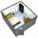
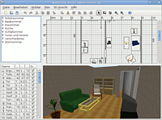

Sweet Home 3D
Dieser Artikel wurde für die folgenden Ubuntu-Versionen getestet:
Ubuntu 16.04 Xenial Xerus
Ubuntu 14.04 Trusty Tahr
Zum Verständnis dieses Artikels sind folgende Seiten hilfreich:
Archive entpacken, optional
Ein Terminal öffnen, optional

Bei Sweet Home 3D  handelt es sich um ein Open-Source-Programm zur Einrichtungsplanung. Durch die einfach gehaltene Oberfläche und leichte Bedienung finden sich auch Anfänger gut zurecht und können dank der vielen mitgelieferten 3D-Modelle sehr schnell und einfach einen Grundriss erstellen und mit Zubehör ausstatten.
handelt es sich um ein Open-Source-Programm zur Einrichtungsplanung. Durch die einfach gehaltene Oberfläche und leichte Bedienung finden sich auch Anfänger gut zurecht und können dank der vielen mitgelieferten 3D-Modelle sehr schnell und einfach einen Grundriss erstellen und mit Zubehör ausstatten.
Wem die vorhandenen Modelle nicht reichen, der kann sich von diversen Seiten weitere Einrichtungsgegenstände laden und diese einfach in das Programm importieren.
Voraussetzungen¶
Sweet Home 3D erfordert eine Java-Laufzeitumgebung (JRE), welche mindestens der Version 1.6 (Java 6) oder neuer entsprechen sollte. Installiert man das Programm aus den offiziellen Paketquellen, wird Java bzw. OpenJDK als Abhängigkeit direkt mit installiert. Sollte sich das Programm nicht starten lassen, kann die Verwendung von Oracle Java statt OpenJDK weiterhelfen.
Installation¶
Sweet Home 3D kann über die offiziellen Paketquellen oder als Java-Web-Start-Programm installiert werden, alternativ auch als Archiv mit fertigen Binär-Dateien.
sweethome3d (universe)
 mit apturl
mit apturl
Paketliste zum Kopieren:
sudo apt-get install sweethome3d
sudo aptitude install sweethome3d

Manuell¶
Java Web Start¶
Da das Programm komplett in Java geschrieben wurde, reicht es aus, auf der Download-Seite den Link Sweet Home 3D mit Java Web Start ausführen zu benutzen. Das Programm wird dann auf die Festplatte kopiert und kann über Java Web Start gestartet werden. Beim ersten Start wird das Programm in den lokalen Java-Cache-Ordner verschoben und automatisch ein Icon auf dem Desktop angelegt, so dass man in Zukunft auch offline damit arbeiten kann.
Binär-Dateien¶
Das Archiv mit den Binär-Dateien kann von SourceForge  heruntergeladen und entpackt werden [3]. Sweet Home 3D kann nun über den Befehl ./SweetHome3D im soeben entpackten Verzeichnis gestartet werden [4].
heruntergeladen und entpackt werden [3]. Sweet Home 3D kann nun über den Befehl ./SweetHome3D im soeben entpackten Verzeichnis gestartet werden [4].
Hinweis!
Fremdsoftware kann das System gefährden.
Bedienung¶

Anschließend ist das Programm bei Ubuntu-Varianten mit einem Anwendungsmenü unter "Grafik -> Sweet Home 3D" zu finden, kann aber auch mit dem Befehl sweethome3d direkt gestartet werden.
Wände zeichnen und ändern¶
Über das Icon in der Symbolleiste (Wandecke mit einem +) kann man neue Wände erstellen. Möchte man eine neue Wand an eine bestehende Wand anschließen, muss man diese nur bis zur bestehenden Wand ziehen, bis eine kleine Hilfslinie erscheint.
Die Länge und Richtung einer Wand lassen sich mit Hilfe des Auswahlwerkzeuges ändern, indem man die betreffende Wand anklickt. Es erscheinen dann kleine Symbole am Anfang und Ende, mit denen man die Wand verziehen kann.
Gegenstände einfügen und anpassen¶
3D-Modelle lassen sich mit der Maus aus der linken Positionsliste einfach per "Drag & Drop" in den Grundriss ziehen. Möchte man die Eigenschaften eines Gegenstandes ändern, kann man diesen einfach mit der rechten Maustaste anklicken und "Modify furniture..." auswählen.
3D-Ansicht anpassen¶
Standardmäßig steht die 3D-Ansicht auf "Luftansicht", wodurch die Perspektive von Schräg oben auf das ganze Objekt fällt. Ändert man im Menü "3D Ansicht" auf "Virtuelles begehen", erscheint dagegen im Grundriss eine Person, die man mit dem Auswahlwerkzeug verschieben kann. Möchte man den Blickwinkel der Person ändern, kann man sich der beiden Symbole links und rechts an den "Schultern" der Person bedienen. Der Halbkreispfeil dient dabei zum drehen der Person in eine andere Richtung, während man mit dem anderen Pfeil die Blickrichtung nach oben oder unten ändern kann.
In den FAQs auf der Homepage wird beschrieben, wie man die 3D-Features in Sweet Home 3D deaktivieren kann, dies ist seit Version 3.2 möglich. Die Sweet Home 2D-Anwendung, enthält keine 3D-Ansicht, keine Möglichkeit, Fotos zu rendern und Videos zu erzeugen. Das Zeichnen und Positionieren von Möbeln in der 2D-Übersicht ist weiterhin möglich. SH3D-Dateien, die mit dieser Version erzeugt wurden, sind mit denen der Sweet Home 3D-Version kompatibel. Auch Möbelbibliotheken können weiterhin importiert werden.
Erweiterungen¶
Auf der Seite der 3D-Modelle  kann man sich weitere Einrichtungsgegenstände herunterladen. Diese müssen zuerst entpackt und danach im Menü unter "Mobilar -> Mobilar importieren... -> Modell wählen" importiert werden.
kann man sich weitere Einrichtungsgegenstände herunterladen. Diese müssen zuerst entpackt und danach im Menü unter "Mobilar -> Mobilar importieren... -> Modell wählen" importiert werden.
Hinweis:
Sollte sich das Programm hierbei unvermittelt beenden, liegt oft ein Problem zwischen der Java3D Engine und dem Grafikkartentreiber vor. In diesem Fall sollte ein anderer (neuerer) Grafiktreiber installiert werden.
Wer sich selbst an einem Möbelstück versuchen möchte, kann dies mit einem geeigneten Programm tun. Sweet Home 3D unterstützt für den Import die Dateiformate von Maya (OBJ), Lightwave 3D (LWS) und 3ds Max (3ds).
Deinstallation¶
Java Webstart¶
Um das Programm restlos zu entfernen, muss man es aus dem Java-Cache löschen. Bei Oracle Java erfolgt dies unter "System -> Einstellungen -> Oracle Java Plugin Control Panel". Hier kann man sich die installierten Anwendungen anzeigen lassen und einzeln entfernen. Fehlt dieser Eintrag, muss man ihn erst erstellen.
Die XML-Konfigurationen von Java befinden sich unter ~/.java/.userPrefs/com/eteks/sweethome3d/, welche man löschen kann. Allerdings ist die Gesamtgröße nur ein paar Kilobyte und stört nicht weiter, falls man das Programm später doch noch einmal verwenden möchte.
Hat man eigene 3D-Modelle importiert, sind diese im Verzeichnis ~/.eteks/sweethome3d/ abgelegt, welches man je nach Bedarf löschen oder behalten kann.
Binär-Dateien¶
Zur Deinstallation genügt es, das bei der Installation entpackte Verzeichnis zu löschen. Hat man eigene 3D-Modelle importiert, sind diese im Verzeichnis ~/.eteks/sweethome3d/ abgelegt, welches man je nach Bedarf löschen oder behalten kann.
Links¶
Sweet Home 3D
auf SourceForge
Install Sweet Home 3D 4.1 via PPA in Ubuntu 13.04/12.04
- Blogbeitrag, 09/2013
- Erstellt mit Inyoka
-
 2004 – 2017 ubuntuusers.de • Einige Rechte vorbehalten
2004 – 2017 ubuntuusers.de • Einige Rechte vorbehalten
Lizenz • Kontakt • Datenschutz • Impressum • Serverstatus -
Serverhousing gespendet von